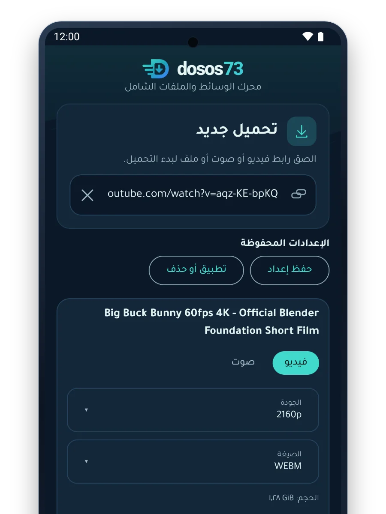
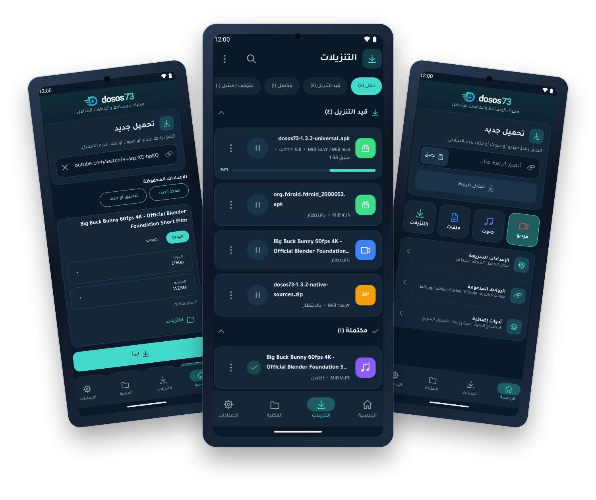
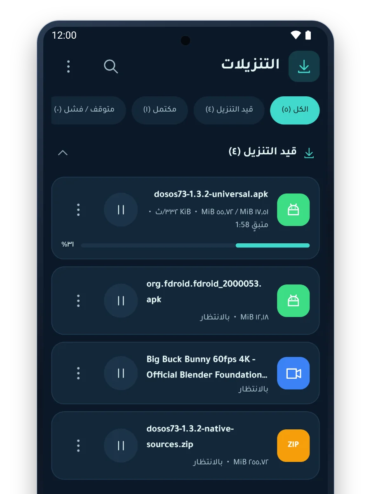
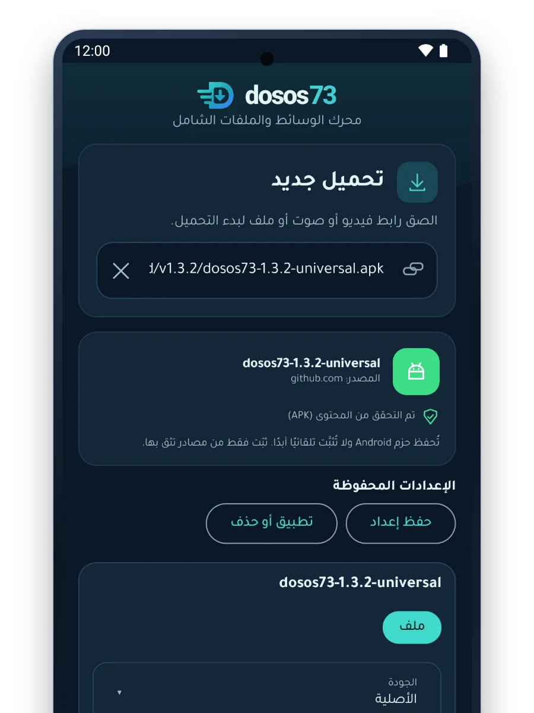
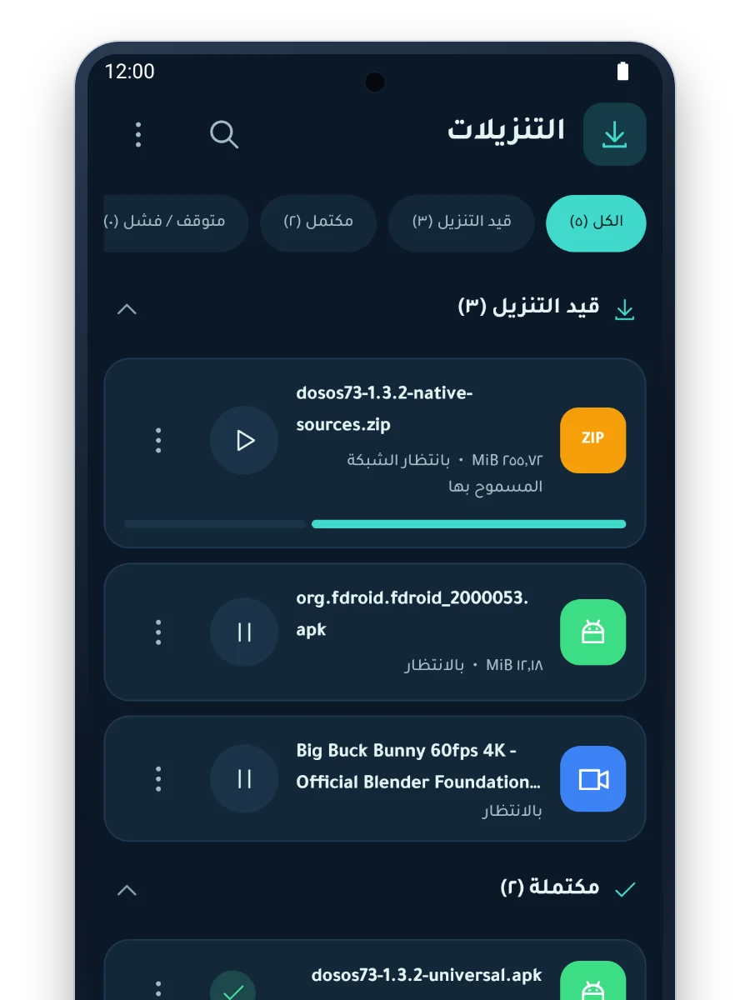
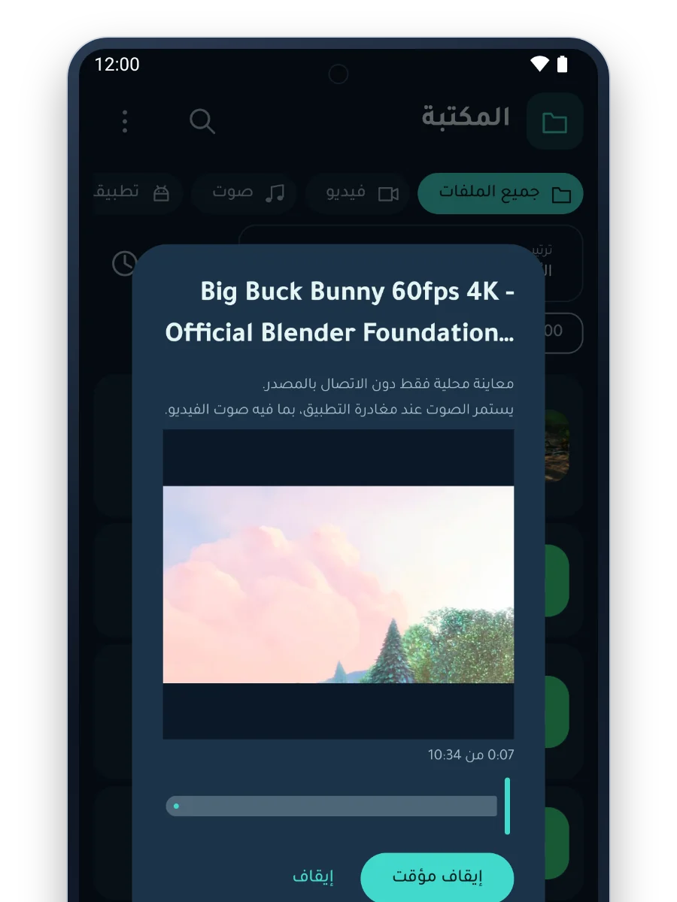
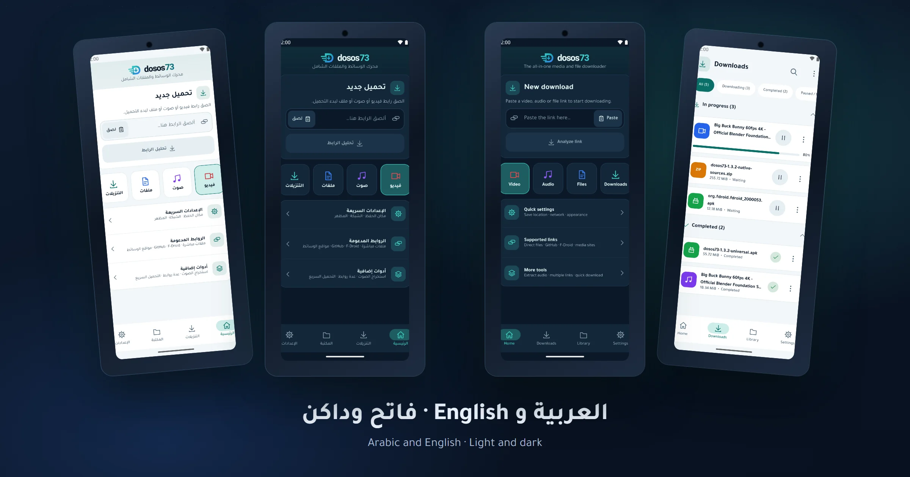

اختر قبل أن تبدأ
يعرض الجودات والصيغ التي يتيحها المصدر، حتى 2160p للفيديو أو MP3 للصوت، مع الحجم المتوقع ومكان الحفظ.
مدير تنزيل مفتوح المصدر لأندرويد
ألصق الرابط، واختر الجودة والصيغة، وتابع التنزيل حتى يُحفظ الملف سليمًا على جهازك. فيديو وصوت MP3 وملفات مباشرة من GitHub وF-Droid، بواجهة عربية وإنجليزية.

كل خطوة من الرابط إلى الملف المحفوظ واضحة وقابلة للتحقق.

يعرض الجودات والصيغ التي يتيحها المصدر، حتى 2160p للفيديو أو MP3 للصوت، مع الحجم المتوقع ومكان الحفظ.

التقدم والسرعة والوقت المتبقي لكل ملف، مع إيقاف مؤقت واستئناف وإعادة ترتيب، وتصنيف للمكتمل والمتوقف.

يتعرّف على نوع الملف من بايتاته الفعلية لا من اسمه، ويرفض صفحات الويب المتنكرة كملفات. ولا يثبّت أي APK تلقائيًا.

إذا انقطعت الشبكة ينتظر عودتها ثم يكمل من آخر نقطة متحقق منها، حتى مع روابط GitHub الموقّعة.

شغّل الصوت والفيديو من جهازك، ويستمر الصوت في الخلفية. ابحث في ملفاتك ونظّمها وشاركها.
واجهة من اليمين إلى اليسار بخط Tajawal، وسمة فاتحة وداكنة، ونصوص تتسع لتكبير الخط حتى 200%.

رئيسية وتنزيلات ومكتبة وإعدادات بتصميم موحّد، وسمة فاتحة، ودعم للأجهزة اللوحية والخط الكبير.
ودجت للشاشة الرئيسية يعرض التنزيل الحالي، وإشعارات تقدّم بأزرار إيقاف وإلغاء، مع إخفاء أسماء الملفات افتراضيًا.
ألصق رابط صفحة الإصدار أو صفحة التطبيق، ويجد dosos73 الملف الصحيح من واجهاتهما الرسمية.
يحفظ الملف باسمه الحقيقي، ويضيف رقمًا مميزًا عند التكرار بدل الاستبدال.
يكمل التنزيل بعد فقد الشبكة بدل أن يفشل، ويعرض زر «استئناف» للمهام المنتظرة.
نسخة اختيارية لهواتف ARM64 بحجم 22.32 ميغابايت، أي أصغر بنحو 62% من الحزمة الموحّدة.
الحزمتان موقّعتان بالمفتاح نفسه الذي وُقّع به 1.3.2، فتحدّث النسخة المثبتة دون فقد بياناتك.
58.57 ميغابايت · ARM64 وARM32 وx86 وx86_64
تعمل على كل أجهزة Android 10 فأحدث.
تنزيل الحزمة الموحّدة22.32 ميغابايت · ARM64 فقط
لمعظم الهواتف الحديثة. محرك الوسائط فيها لم يُجرَّب بعد على هاتف فعلي.
تنزيل حزمة ARM64466bb6301a3ca4b44c11a0fe1fc636c4267e99594926888b5d946a269baf2f2972dc7c402e8c1313076482bca3893cf5e3f7edbc885503f35d5d11b9576fd196لا يجمع التطبيق إحصاءات استخدام. سجلات المهام مشفّرة على جهازك، والنسخ الاحتياطي معطّل.
لا يتجاوز DRM أو تسجيل الدخول أو القيود الإقليمية. نزّل فقط ما يحق لك حفظه.
حماية من إعادة التوجيه إلى العناوين الداخلية، ورفض خفض HTTPS، وتنظيف أسماء الملفات. التفاصيل في مراجعة الأمان.